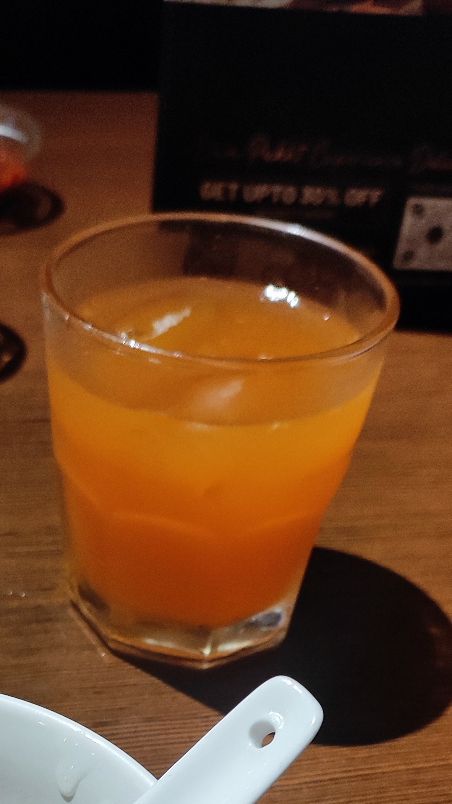
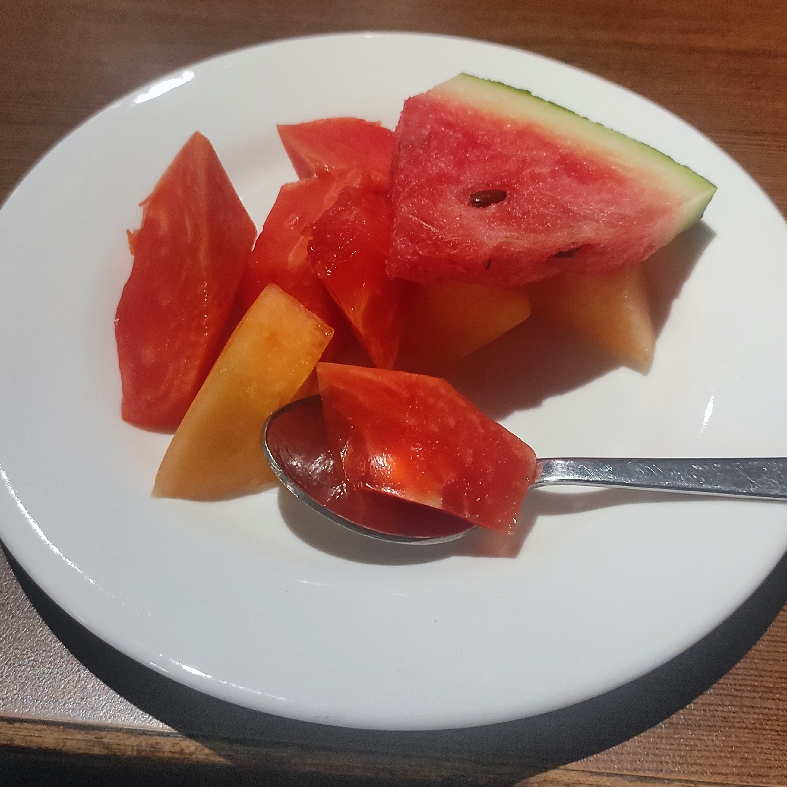
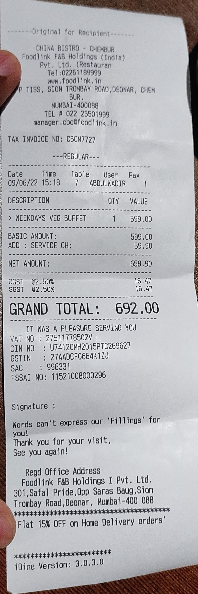

An interesting thought I got while wondering what to have for lunch is
to try out something new, something exciting. A recent suggestion from
an acquaintance in the HBCSE Campus pointed me toward Chinese food.
Although I looked for other places, knowing this one would be
expensive, I somehow decided to give it a shot and thus began my
journey for the day.
An Auto Ride to the Destination
I looked on Google Maps and found that the best way to reach the place would be to catch an auto.
Finding the shop's
location was not a big deal it was right on the side of the road and
had huge boards to welcome people. What surprised me was the change in
the ambiance as I walked inside the shop.
I am very well aware that I have not yet mentioned the name of the
place I'm visiting, although you might have seen the spoiler in the
title. That's because it's an entire chapter in this story.
China Bistro
China Bistro, Mumbai
The change in ambiance is very apparent as you walk into the hallway
from a dusty highway filled with vehicles and people. The noises
suddenly disappear, and the atmosphere becomes serene. The transition
from chaos to order is apparent.
A Luxorious Entracne
It was interesting to see that the
actual restaurant is a culmination of two parts, partially joined
together. Straight ahead into the hallway, the door to enter the China
Bistro can be seen. Just to the right of the door is the entrance to a
place named the Indian Bistro.
China's Neighbour India
I was warmly welcomed by a waiter who showed me to my seat. The
restaurant was sufficiently seated, not too much to call it filled but
not too less to call it inactive. I opted for a corner seat as it
would give me enough privacy and a good view of the restaurant. Unlike
many Chinese restaurants, which usually go for a dark interior, they
chose to go with a modern design with good ambient lighting. add image
of restaurant
I was given a menu for the buffet lunch and a standard menu with all
available foods. I was also given a menu for drinks and beverages. The
traditional menu showed me that any food item I chose would cost me
around 400 rupees. From what I know about myself, I was pretty sure I
wouldn't be satisfied with just one dish. So, seeing that the buffet
lunch was priced at 599 + tax and service charges, I chose to go on
the buffet adventure.
Somehow it felt that I had to give myself a treat and that I had to
live my life while I could. I don't generally like to spend too much
on food as I can get a lot more quantity for the same price. Still,
today it felt like maybe the experience must also be given a chance.
The Appetizers
The buffet meal started with me being given an appetizer plate, a soup, and a welcome drink. I
expected to receive one dish from each section of the menu. The first dish served was "Cottage
Cheese Jiang's Chilli," basically paneer alongside a cup of "Veg Eight Treasure Soup."
I was asked to pick one from peach ice tea, lemon ice tea, soft drinks, or lime soda as my welcome
drink. The peach iced tea felt like the most royal taste I could experience among them, so that was
my choice.

My First Peach Ice Tea
The soup was thick and creamy. It had a sweet yet slightly salty flavor and was not over-saturated
with cream or sauce. It was translucent with tiny pieces of veggies floating around, and the
temperature felt just right.
The soup in itself was exquisite and gave a sense of fulfillment.
The paneer had a chewy texture and a flavor with a tint of soy sauce. It was creamy and melted in my
mouth. It was adequately coated in its sauce, but not too much that it looked oily. I was given a
generous amount to eat.
As I expected the appetizers to end, I was surprised with another appetizer from the menu, The
"Lemon Chilli Potato." The name itself gave me chills. It felt magical even to think of that
combination. The taste matched my expectations, and it was fantastic. The lemon gave it a zesty
touch, and the chili gave it its punch. The potato, as usual, was an excellent piece in binding the
two together with its mushy and creamy texture. Although not crunchy like some French fries, it was
crispy and soft. It was a masterpiece and some of the best potato wedges I've had to date.
Lemon Chilli Potato
Although the paneer was the more anticipated dish on the menu, the potato wedges stole the show with
their incredible texture.
The peach ice tea cleansed the mouth for re-experiencing the taste of other dishes, and the
sweetness in the soup balanced everything out.
Once again, I was surprised by the arrival of more appetizers. I was presented with a serving of
"Veg Coriander Dumplings," which the waiter called a "Dimsum," and "Vegetable Spring Rolls."
Veg Coriander Dumplings & Vegetable Spring Rolls
Not knowing what to expect, I put my first ever dumpling in my mouth. This came nowhere near the
potato or the paneer. Inside the dumpling were some chopped coriander and maybe some veggies, while
the outer shell was of a translucent rubbery texture. The spring roll was like a small tightly
wrapped veg samosas, not too royal but not too dull, and until now, the potato wedges and paneer
hold the lead.
The last paneer piece on the plate was eaten with a heavy heart. Followed by the spring roll and the
dumpling. Saving the best for the last, I ate the final potato wedge and the last spoon of soup.
Although the place had other drinks, I remained with my round of iced tea. It was refreshing and of
enough quantity that I didn't feel the need for another.
The soup and the appetizers were filling, but the war was yet to start.
The soup and appetizers were served to me at the table, so I didn't know what I was supposed to do.
Was I to wait? or go get the main course myself? I observed the restaurant while waiting for someone
to give me directions on what next. The place was really considerate of vegetarians. The veg section
of the menu was not inferior in quantity or quality, and it made me feel good about the place even
more.
The Chic Interior
The Main Course
The waiter saw me wondering and informed me that I could go and pick what I wanted to eat from the
buffet.
For my base course, I got a portion of "Vegetable Fried Rice" and some "Vegetable Chilli Butter
Noodles."
For the first part of my main course, I got some "Veg Dumplings in Chilli Soya Sauce" and
"Stir-fried Asian Vegetables." The stir-fried Asian veggies looked more blanched than stir-fried,
while the dumplings looked like veg Manchurians in the sauce. Both of them had an excellent relaxing
taste. I've been looking for the preparation of such veggies for quite some time, and it is
something I would love to have almost daily.
Vegetable Fried Rice and Chilli Butter Noodles with a side of Veg Dumplings in Chilli
Soya Sauce and Stir-fried Asian Vegetables.
The rice was not sticky and was well cooked. The vegetables were noticeable but did not overpower
the rice. The noodles, like their name, had a buttery flavor. It was not spicy but also not bland.
The rice and the noodles tasted terrific, along with the dumpling sauce.
I hadn't yet taken two of the main course dishes that were waiting for me, I wanted to, but the lack
of space on my plate kept me from doing so.
The peach ice tea kept refreshing the palate and kept things cool.
After finishing the first two main dishes while still keeping some of my rice and noodles on the
plate, I tried the other two.
The "Exotic Seasonal Vegetables in Parsley Sauce" looked much more exquisite than I imagined. The
"Corn and Potato in Tsing Hoi Sause" was mostly seen to be untouched by people. I guess it's because
most couldn't reach till here, having hoarded the first dishes into their stomachs.
Exotic Seasonal Vegetables in Parsley Sauce and Corn and Potato in Tsing Hoi Sauce
The veggies in parsley sauce tasted like a soup on a sweeter side. The potato and corn were creamy
and mushy, probably due to the potato. It was not too spicy, contrary to its fiery red looks.
The rice tasted fantastic with both dishes, but the noodles lacked the punch when taken with the
parsley sauce. I prefer the veggies in parsley sauce as a stand-alone dish rather than as a main
course with the rice.
After finishing the rice and noodles, I ate a second serving of rice with the main courses. I did
not do the same for the noodles as the rice felt richer and a better combination with the sauces,
and frankly, I was running out of space to eat more.
Asian Stir-fried Vegetables and Exotic Veggies
Once I was done with the plate, I was still craving the veggies, so I went to get the two of them
again. I got both the Asian and exotic veggies.
The spinach in the Asian stir-fried vegetables had a lovely texture, and the baby corn in both
dishes was terrific. Even though the sauce was what gave the taste to the exotic veggies, the sauce
alone felt tiring.
Refreshing Peach Ice Tea
After finishing the main course, I set out to see what was for dessert. I cleansed my palette with
the remaining ice tea, which I was surprised lasted this long.
The Dessert
There seemed to be many dessert options and trying them one by one made more sense. There were
fruits, mainly watermelon, papaya, and muskmelon. And thus, I started there. The muskmelon didn't
have any specific taste and was mostly bland. The papaya and watermelon, however, were sweet and
tasty.

Assorted Fruits: Watermelon, Papaya, and Muskmelon
On returning to the counter, I was saddened when I discovered that the caramel custard and other
custard dishes contained eggs and were off-limits for me. Nevertheless, I looked for alternatives
that were for me.
Caramel Custard and Other Custard Dishes
The next item for me was a dish called "Darsaan." It was like sweet papad dipped in sugar syrup,
with white sesame sprinkled on it. There is a similar lovely which I've seen at shops in Kerala and
made by my community. (I later found out when it was too late that it is part of a traditional
Chinese dessert eaten with ice cream.)
Darsaan: Sweet Papad with Sugar Syrup and Sesame
Done with the Darsaan, I built myself a fabulous ice cream treat. I took all three flavors of ice
cream (vanilla, chocolate, and strawberry), topped it with jam (which I feel was made of peach or
orange or both), then put in choco chips (dark and light,) and then got a big spoonful of chocolate
from the fountain. It was brilliant.
Chocolate Fountain
My favorite in the mix was the chocolate from the fountain. It
was liquid when I took it but then turned solid and was chewable. It was a wonderful feeling.
Ice Cream Treat with Vanilla, Chocolate, Strawberry, and Toppings
It was not yet over. I still had marshmallows to eat. I got my marshmallows on a toothpick and
covered it with chocolate from the fountain. It was beautiful to watch and eat. The marshmallow
alone didn't taste much, apart from its signature texture. However, the taste of the chocolate was
beyond words.
Chocolate Covered Marshmallow
The Conclusion
The war was over. I had tried all the dishes I could, ate my heart's content, and it was time to pay
the price, Literally. The total bill was around 700 rupees, including all the tax and service
charges. They brought it to me in style, inside a bamboo bottle. I was also served some digestive
candy, which acts as a mouth freshener.
Stylish Bill Presentation in a Bamboo Bottle
All the while, from the main course to having dessert, I was off back and forth like a madman taking
dishes and trying them out. It's one of those rare moments when I didn't feel shy to do such a
thing. Just doing whatever I wanted, eating things that I liked to my fill. Being myself.
It's not that I paid for it, so I was entitled to it. It's just that it didn't matter what other
people thought. It was my moment, and I decided that I was going to live it.

The Bill for the Meal
This was a unique experience and something I enjoyed thoroughly. Would I be coming back to this
place? Probably not anytime soon. It's too expensive for me to dine in regularly.
Decorative Statue in the Restaurant
But yes, the experience is worth the time and money spent, and this is a place id recommend for at
least a one-time visit.
Bus Ride to Anushakti Nagar
I was pleased with the overall experience. I paid the bill and walked out with a content heart. I
didn't have to walk far in searching for an auto. I saw a bus to Anushakti Nagar as if fate didn't
want me to digest the food quickly. I boarded it and got my ticket for a mere price of 6 rupees. It
felt relaxing that after spending about 700 rupees on lunch, I could return to normalcy and ground
myself for the next few days. The bus ride was calm, and I returned with more than just a filled
stomach.